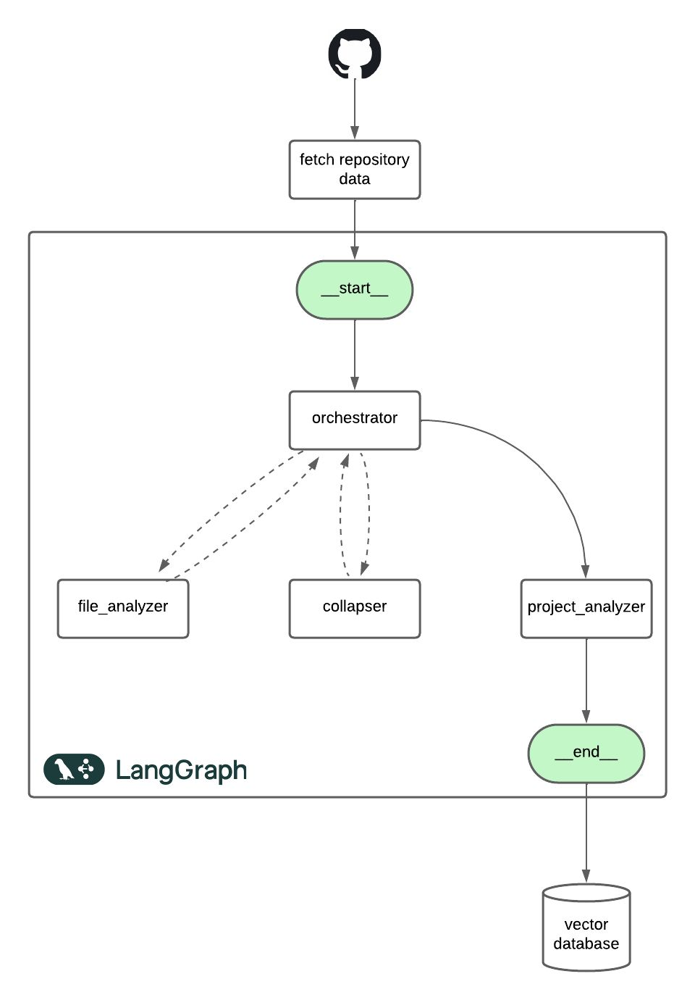

Richie — A Personal Persona
Richie is my AI persona — a Retrieval-Augmented Generation (RAG) system built on top of my projects, experiences, and digital footprint. It’s designed to help others understand my background, skills, and interests through natural conversation.
Instead of browsing my resume or portfolio, you can simply ask Richie. Whether you're a recruiter, collaborator, or just curious, Richie can answer questions about my work and help you explore opportunities to connect or collaborate with me.
 Chat with Richie
Chat with Richie
1. AI Agent Workflow for Codebase Analysis and Vector Storage
To give Richie a meaningful memory, I first needed to deeply analyze my entire online presence. especially all my GitHub projects. This required building an intelligent, automated pipeline that could interpret codebases, understand their structure and goals, and organize that knowledge into a searchable form. The result was an agentic AI workflow that processes each project and stores its insights into a vector database.
This system is modular and inspired by the MapReduce model. It breaks down the analysis into smaller tasks and processes them serially to reduce costs and stay within LLM token constraints. Everything starts with the File Analyzer Agent, which scans each individual source file and extracts key information like function responsibilities, logic, and structure.
When the individual file summaries or their combined output exceeds the input token limit of the LLM, the Collapser Agent steps in to intelligently condense the information while preserving critical details. The refined summaries are then passed to the Project Analyzer Agent, which constructs a high-level understanding — covering project goals, architecture, and development experience. At the top sits the Orchestrator Node, which coordinates the agents, ensures orderly execution, and manages resource efficiency.
The final structured summaries are embedded into a vector database. This forms the long-term memory of Richie — enriched with data from not just code analysis, but also my resume, portfolio writeups, and professional profiles. All of this enables Richie to recall and explain my work in a detailed, context-aware way.
2. AI Workflow Using a RAG System for Smart Query Answering
With the database ready, Richie uses a Retrieval-Augmented Generation (RAG) system to answer questions in real time. The flow starts with a Query Classification Agent, which categorizes the query as document-based, general, or out-of-scope. This ensures that only relevant requests consume compute resources.
Next, a Prompt Rewriting Agent improves vague questions. For example, “Tell me about your AI project” becomes “What problem does your multi-agent AI system solve, and how?” This boosts the accuracy of context retrieval.
The refined query is passed to the Context Chatbot Agent, which uses it to fetch relevant chunks from the vector DB. The final response is then generated using a carefully chosen LLM. If the query is conversational or casual, a lightweight General Chatbot Agent handles it. For unrelated or unsafe queries, an Out-of-Scope Agent provides a fallback message.
The result is a structured, memory-efficient, and cost-conscious AI persona that scales with intelligence — delivering useful answers without wasting tokens.
Richie is a step toward building AI systems that can represent humans — not just by relaying facts, but by understanding context, voice, and intent. Whether you're curious about my projects or hiring for a team, Richie is ready to chat.